目录
- What’s Wrong with Seq2Seq Model?
- Born for Translation Definition
- A Family of Attention Mechanisms Summary Self-Attention Soft vs Hard Attention Global vs Local Attention
- Neural Turing Machines Reading and Writing Attention Mechanisms
- Pointer Network
- Transformer Key, Value and Query Multi-Head Self-Attention Encoder Decoder Full Architecture
- SNAIL
- Self-Attention GAN
- References
[2018-10-28 更新：增加 Pointer Network 以及我实现的 Transformer 代码链接。] [2018-11-06 更新：增加 Transformer 模型的 实现链接。] [2018-11-18 更新：增加 Neural Turing Machines。] [2019-07-18 更新：修正引入 show-attention-tell 论文时对“self-attention”术语的使用错误；将其移至自注意力章节。] [2020-04-07 更新：关于改进 Transformer 模型的后续文章请见Transformer 家族。]
在某种程度上，注意力机制的灵感来自我们如何对图像的不同区域给予视觉注意，或是如何关联一句话中的单词。以图 1 中的柴犬照片为例。
人类的视觉注意力允许我们以“高分辨率”聚焦于某个特定区域（例如注视图中黄色框里的尖耳朵），同时以“低分辨率”感知周围的图像（例如白雪背景和服装如何？），然后据此调整焦点或进行推理。给定图像的一小块区域，其余部分的像素会提供线索，告诉我们那里应该显示什么。我们期望在黄色框里看到一只尖耳朵，因为我们已经看到了狗的鼻子、右边另一只尖耳朵，以及柴犬那神秘的眼睛（红色框里的内容）。然而，底部的毛衣和毯子并不像那些狗狗特征那样有帮助。
类似地，我们可以解释一句话或相近上下文中的词语关系。当我们看到“eating”（吃）这个词时，会预期很快遇到一个食物相关的词。颜色词用来描述食物，但与“eating”本身的直接关联可能没那么大。

简而言之，深度学习中的注意力可以广义地解释为一个重要性权重的向量：为了预测或推断某个元素（例如图像中的一个像素或句子中的一个词），我们使用注意力向量来估计它与其他元素的相关程度（或称“attends to”，你在很多论文中可能都读到过），并以注意力向量为权重对这些元素的值求加权和，作为对目标的近似。
Seq2Seq 模型有什么问题？
Seq2Seq 模型诞生于语言建模领域（Sutskever, et al. 2014）。广义上说，它的目标是将一个输入序列（源）转换为另一个序列（目标），两个序列的长度都可以是任意的。转换任务的例子包括多语言之间的文本或语音机器翻译、问答对话生成，甚至是将句子解析为语法树。
Seq2Seq 模型通常采用编码器-解码器架构，由以下部分组成：
- 编码器处理输入序列，并将信息压缩到一个固定长度的上下文向量（也称为句子嵌入或“thought”向量）中。这个表示被期望能够很好地概括整个源序列的含义。
- 解码器以该上下文向量作为初始状态，生成转换后的输出。早期工作仅使用编码器网络的最后一个状态作为解码器的初始状态。
编码器和解码器都是循环神经网络，即使用 LSTM 或 GRU 单元。
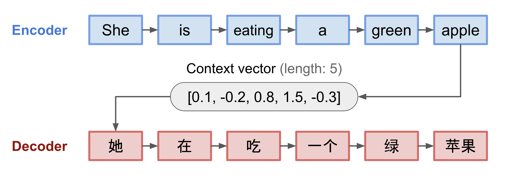
这种固定长度上下文向量设计的一个关键且明显的缺点是无法记住长句子。通常在处理完整个输入后，它就已经忘记了开头部分。注意力机制正是为了解决这个问题而诞生的（Bahdanau et al., 2015）。
为翻译而生
注意力机制的诞生是为了帮助神经机器翻译（NMT）记住较长的源句子。它不再仅从编码器的最后一个隐藏状态构建单一的上下文向量，而是通过注意力机制在上下文向量与整个源输入之间建立快捷连接。这些快捷连接的权重可以针对每个输出元素进行个性化调整。
虽然上下文向量可以访问整个输入序列，但我们无需担心遗忘问题。源序列和目标序列之间的对齐是通过上下文向量学习和控制的。本质上，上下文向量整合了三部分信息：
- 编码器隐藏状态；
- 解码器隐藏状态；
- 源序列与目标序列之间的对齐。
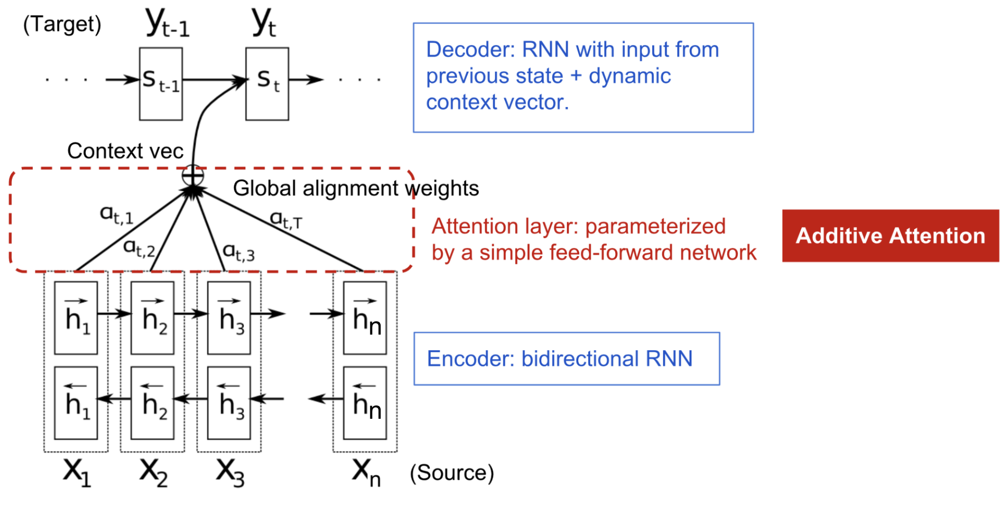
定义
现在让我们以科学的方式定义 NMT 中引入的注意力机制。假设我们有一个长度为 n 的源序列 \mathbf{x}，要输出长度为 m 的目标序列 \mathbf{y}：
（粗体变量表示它们是向量；本文中其余部分同理。）
编码器是一个 双向 RNN（或你选择的其它循环网络结构），具有前向隐藏状态 \overrightarrow{\boldsymbol{h}}_i 和后向隐藏状态 \overleftarrow{\boldsymbol{h}}_i。两者简单拼接后代表编码器状态。其动机是将一个词的前后文信息都包含在其标注中。
解码器网络在输出位置 t 的词 t=1,\dots,m 处具有隐藏状态 \boldsymbol{s}_t=f(\boldsymbol{s}_{t-1}, y_{t-1}, \mathbf{c}_t)，其中上下文向量 \mathbf{c}_t 是输入序列隐藏状态的加权和，权重由对齐分数决定：
对齐模型为输入位置 i 和输出位置 t 的配对 (y_t, x_i) 分配一个分数 \alpha_{t,i}，基于它们匹配的程度。\{\alpha_{t, i}\} 这组权重定义了每个输出应该考虑多少源隐藏状态。在 Bahdanau 的论文中，对齐分数 \alpha 由一个单隐藏层的前馈网络参数化，该网络与模型的其他部分联合训练。因此分数函数采用以下形式（这里使用 tanh 作为非线性激活函数）：
其中 \mathbf{v}_a 和 \mathbf{W}_a 都是需要在对齐模型中学习的权重矩阵。
对齐分数矩阵是一个很好的副产品，它可以明确地显示源语言和目标语言词语之间的相关性。
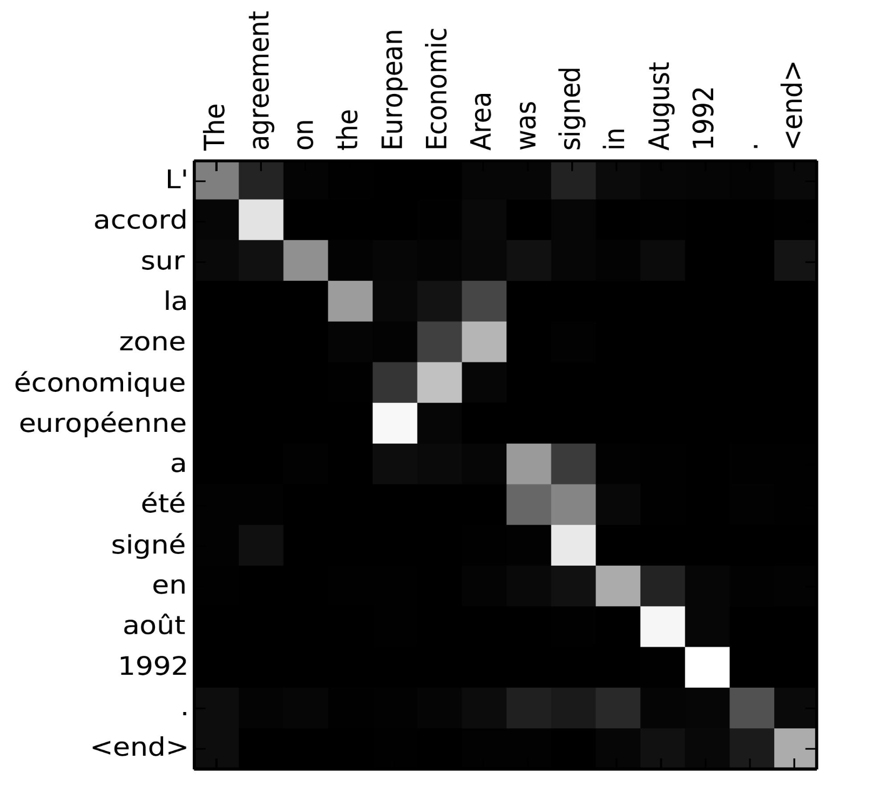
可以参考 Tensorflow 团队的这个优秀 教程 以获取更多实现指导。
注意力机制家族
借助注意力机制，源序列和目标序列之间的依赖不再受中间距离的限制！鉴于注意力在机器翻译中带来的巨大改进，它很快被扩展到计算机视觉领域（Xu et al. 2015），人们也开始探索各种其他形式的注意力机制（Luong, et al., 2015；Britz et al., 2017；Vaswani, et al., 2017）。
总结
下面是一个流行注意力机制及其对应对齐分数函数的总结表格：
| Name | Alignment score function | Citation |
|---|---|---|
| Content-base attention | \text{score}(\boldsymbol{s}_t, \boldsymbol{h}_i) = \text{cosine}[\boldsymbol{s}_t, \boldsymbol{h}_i] | Graves2014 |
| Additive(*) | \text{score}(\boldsymbol{s}_t, \boldsymbol{h}_i) = \mathbf{v}_a^\top \tanh(\mathbf{W}_a[\boldsymbol{s}_{t-1}; \boldsymbol{h}_i]) | Bahdanau2015 |
| Location-Base | \alpha_{t,i} = \text{softmax}(\mathbf{W}_a \boldsymbol{s}_t) Note: This simplifies the softmax alignment to only depend on the target position. |
Luong2015 |
| General | \text{score}(\boldsymbol{s}_t, \boldsymbol{h}_i) = \boldsymbol{s}_t^\top\mathbf{W}_a\boldsymbol{h}_i where \mathbf{W}_a is a trainable weight matrix in the attention layer. |
Luong2015 |
| Dot-Product | \text{score}(\boldsymbol{s}_t, \boldsymbol{h}_i) = \boldsymbol{s}_t^\top\boldsymbol{h}_i | Luong2015 |
| Scaled Dot-Product(^) | \text{score}(\boldsymbol{s}_t, \boldsymbol{h}_i) = \frac{\boldsymbol{s}_t^\top\boldsymbol{h}_i}{\sqrt{n}} Note: very similar to the dot-product attention except for a scaling factor; where n is the dimension of the source hidden state. |
Vaswani2017 |
(*) 在 Luong et al., 2015 中称为“concat”，在 Vaswani et al., 2017 中称为“additive attention”。 (^) 它增加了一个缩放因子 1/\sqrt{n}，原因是当输入较大时，softmax 函数的梯度可能极小，难以高效学习。
以下是对注意力机制更广义分类的总结：
| Name | Definition | Citation |
|---|---|---|
| Self-Attention(&) | Relating different positions of the same input sequence. Theoretically the self-attention can adopt any score functions above, but just replace the target sequence with the same input sequence. | Cheng2016 |
| Global/Soft | Attending to the entire input state space. | Xu2015 |
| Local/Hard | Attending to the part of input state space; i.e. a patch of the input image. | Xu2015; Luong2015 |
(&) 在 Cheng et al., 2016 及其他一些论文中也称为“intra-attention”。
自注意力
自注意力（self-attention），也称为内部注意力（intra-attention），是一种将单个序列中不同位置相互关联起来以计算该序列自身表示的注意力机制。它在机器阅读、抽象摘要生成或图像描述生成中已被证明非常有用。
长短期记忆网络论文使用自注意力来进行机器阅读。在下面的例子中，自注意力机制使我们能够学习当前词与句子前面部分之间的相关性。
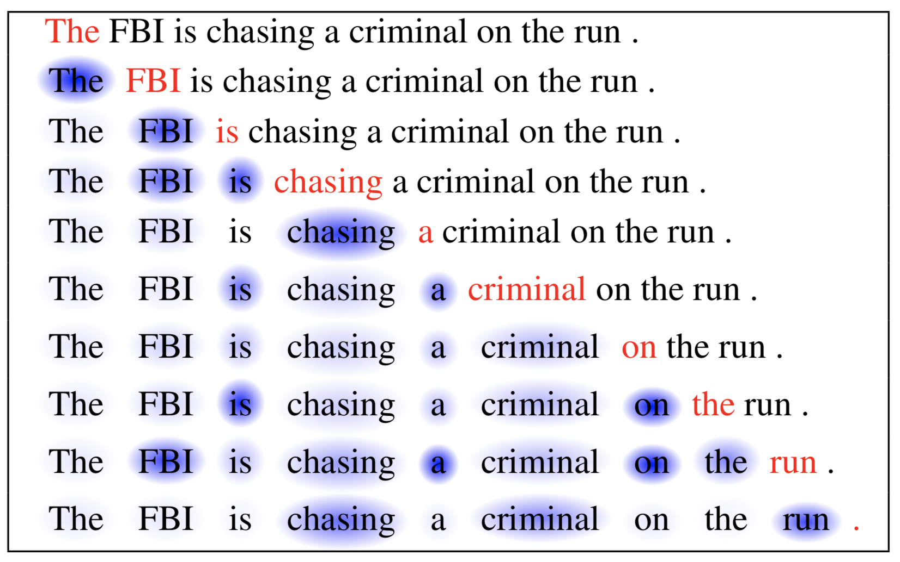
软注意力与硬注意力
在 show, attend and tell 论文中，注意力机制被应用于图像以生成描述。首先用 CNN 对图像进行编码以提取特征，然后 LSTM 解码器逐个消费卷积特征并生成描述性词语，其中的权重通过注意力学习得到。注意力权重的可视化清楚地展示了模型在输出某个词时正在关注图像的哪些区域。
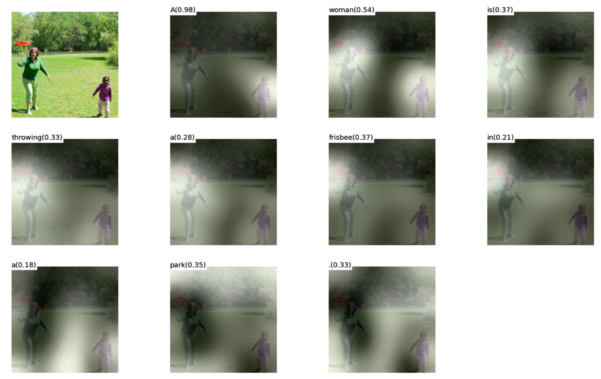
这篇论文首次提出了“软”注意力与“硬”注意力的区分，依据是注意力是否可以访问整张图像还是仅访问一个局部区域：
- Soft Attention: the alignment weights are learned and placed “softly” over all patches in the source image; essentially the same type of attention as in Bahdanau et al., 2015. Pro: the model is smooth and differentiable. Con: expensive when the source input is large.
- Hard Attention: only selects one patch of the image to attend to at a time. Pro: less calculation at the inference time. Con: the model is non-differentiable and requires more complicated techniques such as variance reduction or reinforcement learning to train. (Luong, et al., 2015)
全局注意力与局部注意力
Luong, et al., 2015 提出了“全局”注意力和“局部”注意力。全局注意力类似于软注意力，而局部注意力则是硬注意力和软注意力的一种有趣混合，是对硬注意力的一种改进，使其变得可微分：模型首先为当前目标词预测一个单一的对齐位置，然后以该源位置为中心取一个窗口来计算上下文向量。
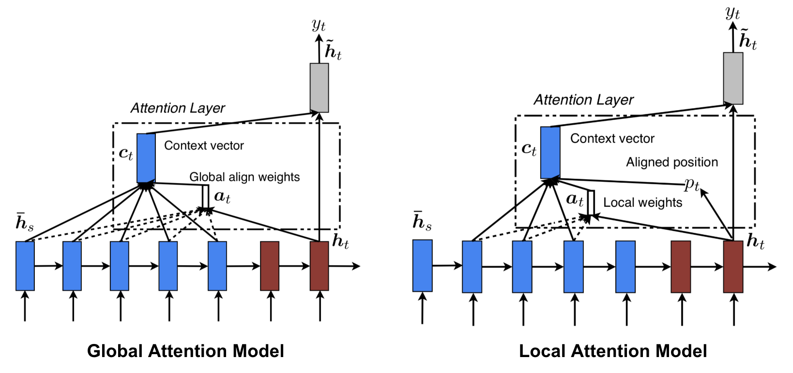
神经图灵机
Alan Turing 在 1936 年提出了一个极简的计算模型。它由一条无限长的纸带和一个与之交互的读写头组成。纸带上有无数个单元格，每个单元格内都填有一个符号：0、1 或空白（“ ”）。操作头可以读取符号、修改符号并在纸带上左右移动。从理论上讲，图灵机可以模拟任何计算机算法，无论该过程多么复杂或昂贵。无限的内存赋予图灵机在数学上无限的能力。然而，无限内存对现实中的现代计算机来说不可行，因此我们仅将图灵机视为一种数学计算模型。

神经图灵机（NTM，Graves, Wayne & Danihelka, 2014）是一种将神经网络与外部记忆存储相结合的模型架构。记忆模拟图灵机的纸带，而神经网络则控制操作头对纸带进行读写。不过 NTM 中的记忆是有限的，因此它可能更像是一个“神经 冯·诺依曼 机”。
NTM 包含两个主要组件：控制器神经网络和记忆库。 控制器：负责在记忆上执行操作。它可以是任意类型的神经网络，前馈或循环均可。 记忆：存储处理后的信息。它是一个大小为 N \times M 的矩阵，包含 N 个向量行，每行有 M 维。
在一次更新迭代中，控制器处理输入并与记忆库交互以生成输出。这种交互由一组并行的读写头处理。读写操作都是“模糊”的，通过对所有记忆地址进行软注意力实现。
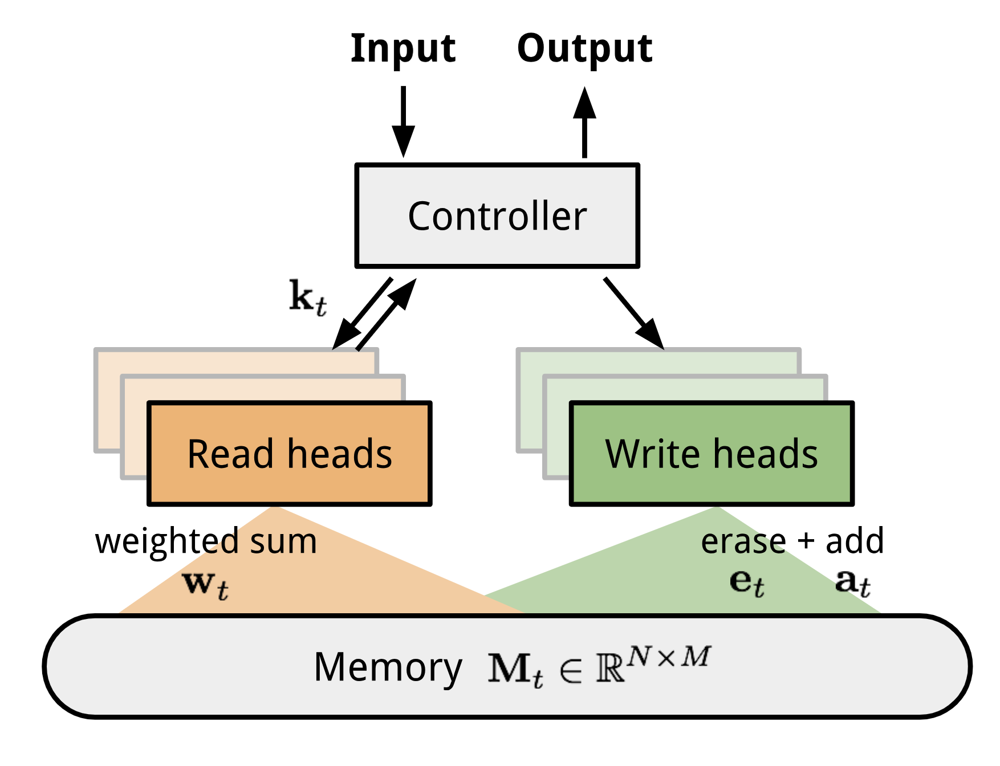
读写操作
在时刻 t 从记忆中读取时，一个大小为 N 的注意力向量 \mathbf{w}_t 控制对不同记忆位置（矩阵行）的注意力分配强度。读取向量 \mathbf{r}_t 是按注意力强度加权求和得到的：
其中 w_t(i) 是 \mathbf{w}_t 中的第 i 个元素，\mathbf{M}_t(i) 是记忆中的第 i 行向量。
在时刻 t 向记忆中写入时，受 LSTM 中输入门和遗忘门的启发，写头首先根据擦除向量 \mathbf{e}_t 擦除一些旧内容，然后通过添加向量 \mathbf{a}_t 加入新信息。
注意力机制
在神经图灵机中，如何生成注意力分布 \mathbf{w}_t 取决于寻址机制：NTM 使用基于内容和基于位置的寻址混合方式。
基于内容的寻址
基于内容的寻址根据控制器从输入中提取的键向量 \mathbf{k}_t 与记忆行之间的相似度来创建注意力向量。基于内容的注意力分数通过余弦相似度计算，然后用 softmax 进行归一化。此外，NTM 还添加了一个强度乘子 \beta_t 来放大或减弱分布的聚焦程度。
插值
然后使用一个插值门标量 g_t 将新生成的基于内容的注意力向量与上一个时间步的注意力权重进行融合：
基于位置的寻址
基于位置的寻址对注意力向量中不同位置的值进行加权求和，权重由一个可在允许整数偏移上移动的权重分布决定。它等价于使用一个核为 \mathbf{s}_t(.)（位置偏移的函数）的一维卷积。有多种方式可以定义这个分布。更多灵感可参考相关文献。
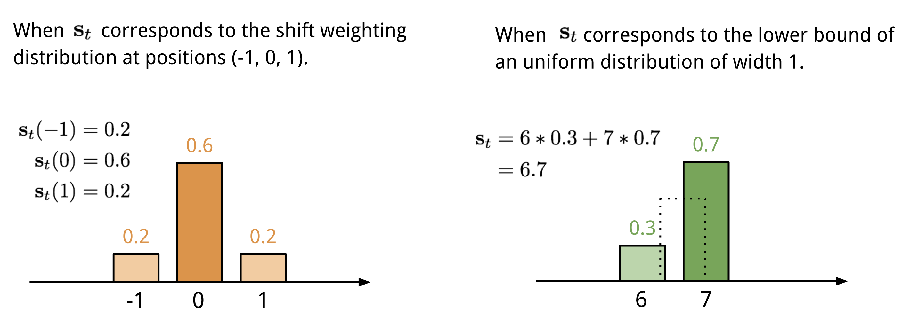
最后，注意力分布通过一个锐化标量 \gamma_t \geq 1 得到增强。
生成时刻 t 的注意力向量 \mathbf{w}_t 的完整过程如图所示。控制器产生的全部参数对每个头都是唯一的。如果存在多个并行的读写头，控制器会输出多组参数。
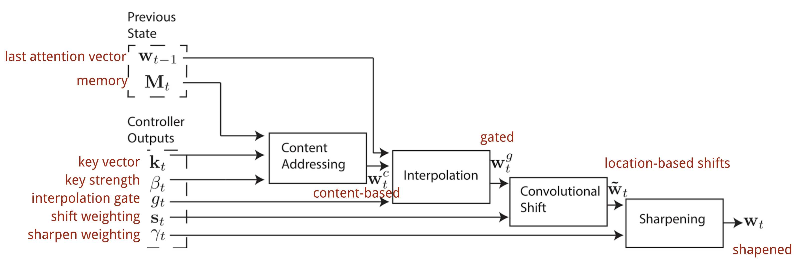
指针网络
在排序或旅行商问题等任务中，输入和输出都是序列数据。不幸的是，经典的 seq2seq 或 NMT 模型难以轻松解决这类问题，因为输出元素的离散类别不是预先确定的，而是取决于可变的输入大小。指针网络（Ptr-Net；Vinyals, et al. 2015）正是为解决这类问题而提出的：当输出元素对应于输入序列中的位置时。指针网络不再使用注意力将编码器的隐藏单元混合成上下文向量（见图 8），而是在输入元素上应用注意力，在解码器的每一步挑选其中一个作为输出。
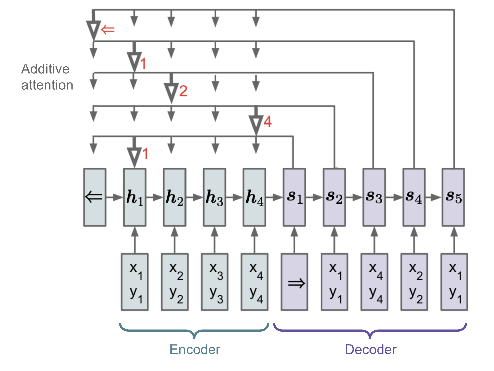
Ptr-Net 输出一个整数索引序列 \boldsymbol{c} = (c_1, \dots, c_m)，给定输入向量序列 \boldsymbol{x} = (x_1, \dots, x_n) 和 1 \leq c_i \leq n。模型依然采用编码器-解码器框架。编码器和解码器的隐藏状态分别记为 (\boldsymbol{h}_1, \dots, \boldsymbol{h}_n) 和 (\boldsymbol{s}_1, \dots, \boldsymbol{s}_m)。注意 \mathbf{s}_i 是解码器中细胞激活后的输出门。Ptr-Net 在状态之间应用加性注意力，然后用 softmax 归一化来建模输出的条件概率：
注意力机制被简化了，因为 Ptr-Net 不再用注意力权重将编码器状态混合到输出中。这样，输出只对位置做出响应，而不依赖输入的具体内容。
Transformer
“Attention is All you Need” （Vaswani, et al., 2017）毫无疑问是 2017 年最具影响力和最有趣的论文之一。它对软注意力进行了大量改进，并使得无需循环网络单元即可进行 seq2seq 建模成为可能。所提出的“Transformer”模型完全基于自注意力机制构建，没有使用序列对齐的循环架构。
其秘诀就藏在模型架构之中。
键、值与查询
Transformer 的主要组件是多头自注意力机制单元。Transformer 将输入的编码表示视为一组键值对 (\mathbf{K}, \mathbf{V})，两者维度均为 n（输入序列长度）；在 NMT 背景下，键和值都是编码器的隐藏状态。在解码器中，先前的输出被压缩成一个查询（维度为 m 的 \mathbf{Q}），通过将这个查询与键值集合进行映射来产生下一个输出。
Transformer 采用缩放点积注意力：输出是值的加权和，其中分配给每个值的权重由查询与所有键的点积决定：
多头自注意力

多头机制不是只计算一次注意力，而是并行多次运行缩放点积注意力。独立的注意力输出被简单地拼接起来，然后经过线性变换得到期望的维度。我猜想其动机可能是集成学习总是有效的？;) 根据论文所述，“多头注意力允许模型在不同位置联合关注来自不同表示子空间的信息。使用单个注意力头时，平均操作会抑制这种能力。”
其中 \mathbf{W}^Q_i、\mathbf{W}^K_i、\mathbf{W}^V_i 和 \mathbf{W}^O 是需要学习的参数矩阵。
编码器
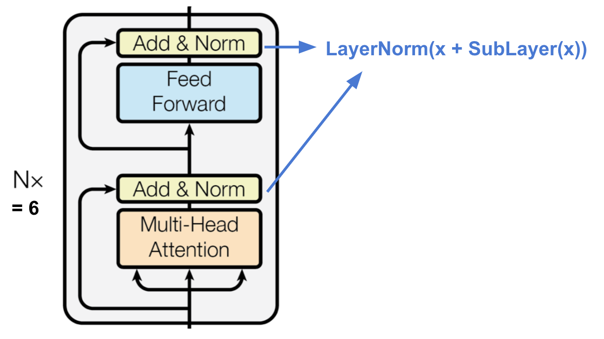
编码器生成基于注意力的表示，能够从可能无限大的上下文中定位特定信息。
- A stack of N=6 identical layers.
- Each layer has a multi-head self-attention layer and a simple position-wise fully connected feed-forward network.
- Each sub-layer adopts a residual connection and a layer normalization. All the sub-layers output data of the same dimension d_\text{model} = 512.
解码器
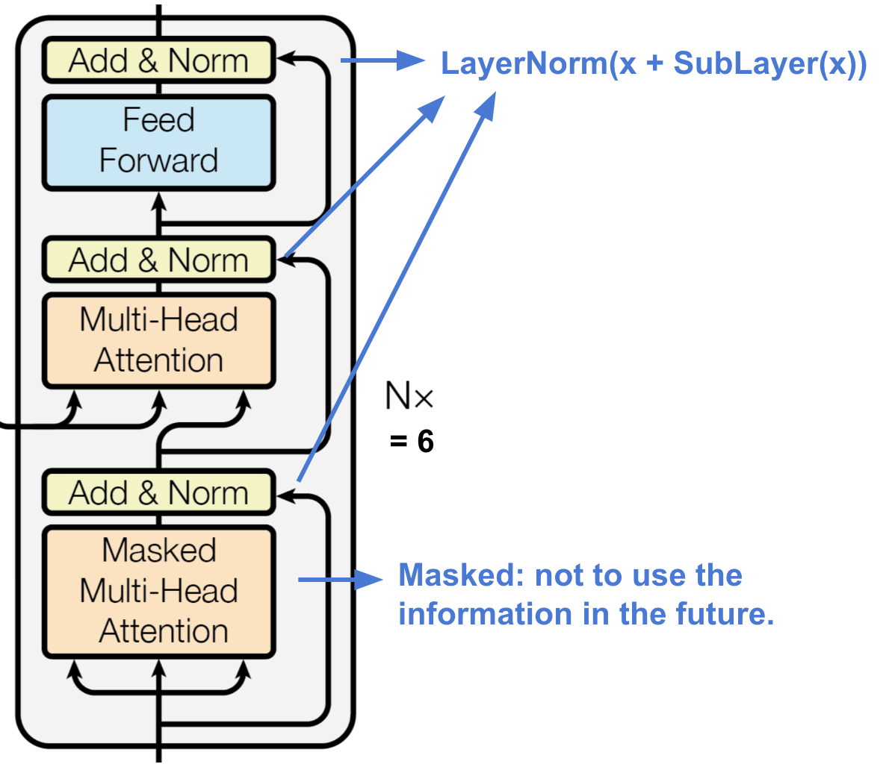
解码器能够从编码表示中检索信息。
- 由 N=6 个完全相同的层堆叠而成。
- 每层包含两个多头注意力子层和一个全连接前馈网络子层。
- 与编码器类似，每个子层都采用残差连接和层归一化。
- 第一个多头注意力子层被修改为阻止位置关注后续位置，因为我们在预测当前位置时不希望看到目标序列的未来信息。
完整架构
最后是 Transformer 架构的完整视图：
- 源序列和目标序列首先经过嵌入层，产生相同维度 d_\text{model} =512 的数据。
- 为了保留位置信息，使用基于正弦波的位置编码，并与嵌入输出相加。
- 在解码器最终输出上添加 softmax 和线性层。
实现 Transformer 模型是一个有趣的经历，这是我的实现：lilianweng/transformer-tensorflow。如果感兴趣，可以阅读代码中的注释。
SNAIL
Transformer 没有循环或卷积结构，即使在嵌入向量中加入了位置编码，序列顺序也只是被弱化地融入。对于对位置依赖非常敏感的问题（如），这可能是一个大问题。强化学习简史（长文）
简单神经注意力元学习器（SNAIL）（Mishra et al., 2017）部分是为了解决 Transformer 在位置处理上的问题而开发的，它将 Transformer 中的自注意力机制与时序卷积结合了起来。它在监督学习和强化学习任务中都表现出色。
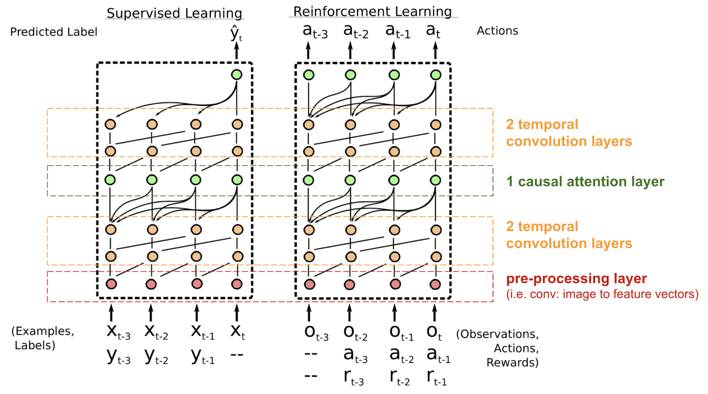
SNAIL 诞生于元学习领域，这本身也是一个值得单独写一篇文章的大话题。简单来说，元学习模型期望能够泛化到分布相似但未见过的新任务上。如果感兴趣，可以阅读这篇精彩的介绍。
自注意力 GAN
自注意力 GAN（SAGAN；Zhang et al., 2018）在从 GAN 到 WGAN中加入了自注意力层，使生成器和判别器都能更好地建模空间区域之间的关系。
经典的DCGAN（深度卷积 GAN）将判别器和生成器都表示为多层卷积网络。然而，网络的表示能力受到滤波器大小的限制，因为一个像素的特征仅限于一个小局部区域。为了连接相距较远的区域，特征必须经过多层卷积操作进行稀释，依赖关系无法保证被保持。
由于视觉上下文中的（软）自注意力被设计为显式学习一个像素与所有其他位置（甚至相距很远的区域）之间的关系，它可以轻松捕捉全局依赖关系。因此，配备了自注意力的 GAN 预计能更好地处理细节，太棒了！
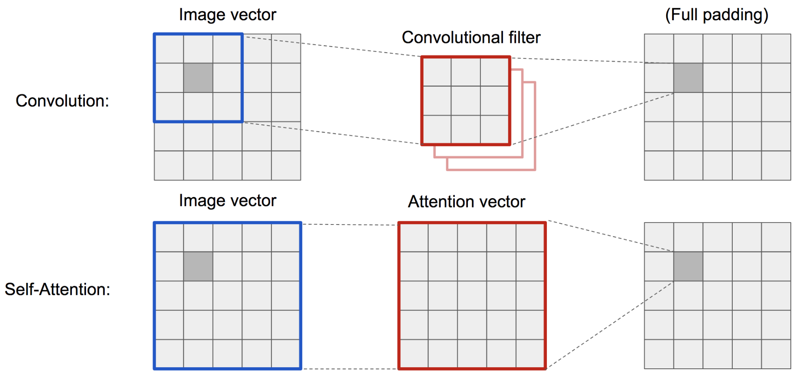
SAGAN 采用非局部神经网络来应用注意力计算。卷积图像特征图 \mathbf{x} 被分支为三份，分别对应 Transformer 中的键、值和查询概念：
- 键：f(\mathbf{x}) = \mathbf{W}_f \mathbf{x}
- 查询：g(\mathbf{x}) = \mathbf{W}_g \mathbf{x}
- 值：h(\mathbf{x}) = \mathbf{W}_h \mathbf{x}
然后我们应用点积注意力来输出自注意力特征图：
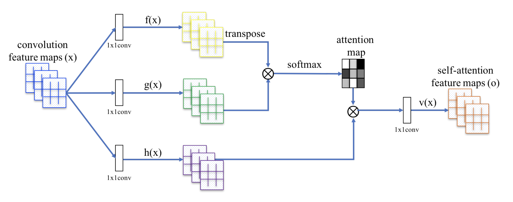
注意 \alpha_{i,j} 是注意力图中的一个条目，表示在合成第 j 个位置时，模型应该对第 i 个位置给予多少注意力。\mathbf{W}_f、\mathbf{W}_g 和 \mathbf{W}_h 都是 1x1 卷积滤波器。如果你觉得 1x1 卷积听起来像一个奇怪的概念（即，它不就是用一个数乘以整个特征图吗？），可以观看 Andrew Ng 的这个简短教程。输出 \mathbf{o}_j 是最终输出 \mathbf{o}= (\mathbf{o}_1, \mathbf{o}_2, \dots, \mathbf{o}_j, \dots, \mathbf{o}_N) 的一个列向量。
此外，注意力层的输出会乘以一个缩放参数，然后加回到原始输入特征图中：
虽然缩放参数 \gamma 在训练过程中从 0 开始逐渐增大，但网络被配置为先依赖局部区域的线索，然后逐渐学会为更远的区域分配更多权重。
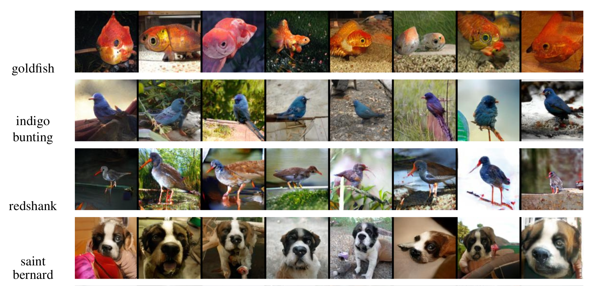
引用格式：
@article{weng2018attention,
title = "Attention? Attention!",
author = "Weng, Lilian",
journal = "lilianweng.github.io",
year = "2018",
url = "https://lilianweng.github.io/posts/2018-06-24-attention/"
}
参考文献
[1] “Attention and Memory in Deep Learning and NLP.” - Jan 3, 2016 by Denny Britz
[2] “Neural Machine Translation (seq2seq) Tutorial”
[3] Dzmitry Bahdanau, Kyunghyun Cho, and Yoshua Bengio. “Neural machine translation by jointly learning to align and translate.” ICLR 2015.
[4] Kelvin Xu, Jimmy Ba, Ryan Kiros, Kyunghyun Cho, Aaron Courville, Ruslan Salakhudinov, Rich Zemel, and Yoshua Bengio. “Show, attend and tell: Neural image caption generation with visual attention.” ICML, 2015.
[5] Ilya Sutskever, Oriol Vinyals, and Quoc V. Le. “Sequence to sequence learning with neural networks.” NIPS 2014.
[6] Thang Luong, Hieu Pham, Christopher D. Manning. “Effective Approaches to Attention-based Neural Machine Translation.” EMNLP 2015.
[7] Denny Britz, Anna Goldie, Thang Luong, and Quoc Le. “Massive exploration of neural machine translation architectures.” ACL 2017.
[8] Ashish Vaswani, et al. “Attention is all you need.” NIPS 2017.
[9] Jianpeng Cheng, Li Dong, and Mirella Lapata. “Long short-term memory-networks for machine reading.” EMNLP 2016.
[10] Xiaolong Wang, et al. “Non-local Neural Networks.” CVPR 2018
[11] Han Zhang, Ian Goodfellow, Dimitris Metaxas, and Augustus Odena. “Self-Attention Generative Adversarial Networks.” arXiv preprint arXiv:1805.08318 (2018).
[12] Nikhil Mishra, Mostafa Rohaninejad, Xi Chen, and Pieter Abbeel. “A simple neural attentive meta-learner.” ICLR 2018.
[13] “WaveNet: A Generative Model for Raw Audio” - Sep 8, 2016 by DeepMind.
[14] Oriol Vinyals, Meire Fortunato, and Navdeep Jaitly. “Pointer networks.” NIPS 2015.
[15] Alex Graves, Greg Wayne, and Ivo Danihelka. “Neural turing machines.” arXiv preprint arXiv:1410.5401 (2014).